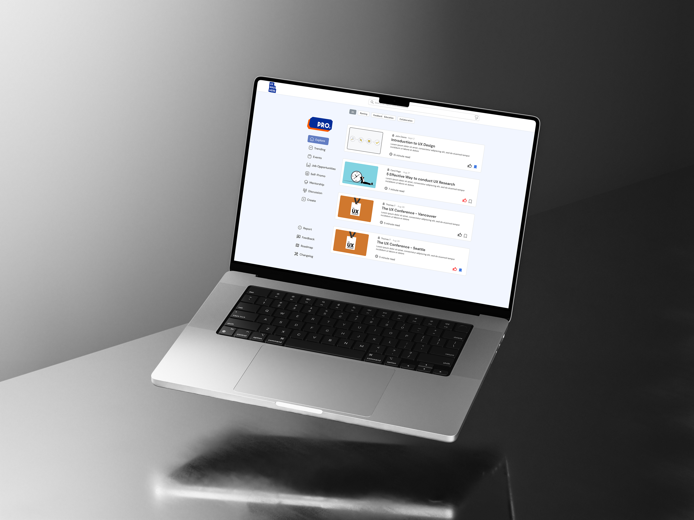
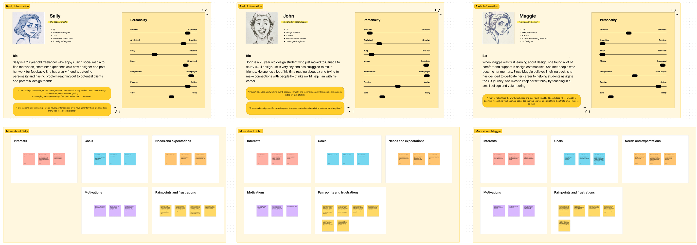

UX Design Jam · Rapid Prototyping · User Research
Overview: I had the incredible opportunity to participate in the Eunoia 2024 UX Design Jam alongside three experienced team members. Over the course of four days, we collaborated intensely to develop a design concept from initial research to a detailed mockup. In our team, there were no fixed roles; instead, we worked together at every stage of the design process to find the best solution for our client.
Our Client: UX Was Here is a dynamic, community-based platform that unites UX enthusiasts from diverse backgrounds under one virtual roof. They face significant challenges in understanding the needs and motivations of their diverse user base.
Our Goal: Our objective was to develop a solution that addresses these challenges and improves the user experience for all members of the UX Was Here community. Through our collaborative efforts, we aimed to deliver a comprehensive design solution within the three-day timeframe.

UI/UX designer
4 days
Our first day began with the Opening Ceremony, where we had the chance to meet our team members, gain an understanding of our client, UX Was Here, and connect with the founder, Matt Karakilic, as well as the judges and mentors. The ceremony provided an introduction to our client and outlined the key problem areas they are facing: "High turn rate, low usage rate."
Following the ceremony, our team held a short meeting to dive deeper into researching and studying our client. We discussed and formulated assumptions about the underlying causes of the problem. Our initial understanding pointed to issues with low user retention and a lack of incentives for users to revisit the website.
What I've learned: Despite the short timeframe for this project, collaborating with new team members can be quite challenging. Referencing the Five Stages of Team Development—Forming, Storming, Norming, Performing, and Adjourning—we had to navigate all five stages in just four days. The most difficult part was progressing through the Storming stage without hindering our process due to time constraints.
During our brainstorming session, each of us had different ideas and opinions on solutions based on our assumptions after thoroughly reading the design brief. I deeply appreciate how our mentor, Ellen, facilitated this challenging stage by introducing us to the concept of embracing uncertainties and being open-minded to any concepts and ideas. She emphasized that everything is possible until we conduct thorough research and study the topic. By the end of the night, we agreed on our assigned tasks, and a consensus was developed.

On the second day, we focused on conducting competitive and secondary research to understand if similar design hubs faced the same issues as UX Was Here. I analyzed Behance, Dribble, and Design Buddies. These analyses are crucial for us to study the strengths and weaknesses of UX Was Here, and how will it be affected if we implement some of the features from its competitors. The main concern from my observation was that most other competitor offers their users a platform to seek jobs, buy or sell assets, demo reels, and build connections. Something the UX Was Here was lacking.
What I've learned: When studying competitors, it's crucial to remain unbiased in developing and analyzing data. One trap I fell into was focusing excessively on monetization aspects when analyzing our competitors, which wasn't directly related to UX Was Here’s core problems. The competitors I analyzed have established monetization strategies, while UX Was Here, being a start-up prototype, does not. Comparing these aspects during my research process was misguided.
I argued that an established monetization system might help retain users, but due to time constraints, I had limited opportunity to investigate users' real incentives when using competitor websites. Reflecting on this, I realized that relying on a monetization system was a "safe approach." Instead, we could have been more imaginative and bold with our ideas, focusing on innovative solutions rather than just implementing a monetization strategy.



On the third day, we decided to conduct primary research with UX designers and designers in general. Anais and Carolina conducted interviews with several participants, gathering sufficient raw data. Using these insights, we created three personas that helped us shape and refine our "How might we" and problem statements. Based on these personas and the solutions derived from our "How might we" statement, we quickly established a user flow. These personas provided a clear understanding of our users' needs, motivations, and challenges, guiding us in developing a targeted and effective design solution.
What I've learned: From the critiques of the judges after our submission, we realized the mistakes we made in building three personas. This approach led us to a vague and generalized solution that could be accepted by anyone but lacked specificity and impact. Creating multiple personas complicated our design decision-making process and the overall system. We frequently encountered situations where a potential solution would apply to Persona A but not to Persona B, resulting in compromises that diluted the effectiveness of our design.
Our initial target user (persona) was clearly defined, and in hindsight, we could have benefited from narrowing our focus. By concentrating on no more than two personas, we could have delved deeper into their specific needs and challenges, allowing us to develop a more solid, targeted solution. This would have helped us avoid the pitfalls of generalization and ensured that our design decisions were more precise and impactful.
This experience taught me the importance of a focused approach when creating personas and making design decisions. It highlighted the need to balance comprehensiveness with clarity to produce solutions that are both effective and user-centric.

On the final day, we split into two sections: one focused on the final mockup design of the website, and the other on slide and feature design. Initially, I was responsible for slide design and organizing information. However, we exchanged sections at times to provide feedback and make adjustments to the design. Once the mockup and slides were complete, each of us recorded ourselves presenting our design solution using a voice recorder. I then edited the voice recordings and slides, compiling them into our final submission.
What I've learned: I thoroughly enjoyed the method we agreed upon of working individually and leaving feedback for each other periodically before and after breaks. This approach allowed us to fully concentrate on our tasks and then iterate on each other’s feedback during breaks. Given our tight schedules, with each of us juggling college assignments, part-time jobs, and other commitments, this flexible method proved highly effective.
We were able to jump back and forth in Figma, making comments and iterations that branched out from the initial design. Having a final meeting each night to finalize our decisions on which iteration to select as the final design made the process efficient and productive. This workflow not only ensured that everyone could contribute effectively but also maintained a high level of collaboration and continuous improvement throughout the project.
Participating in the Eunoia 2024 UX Design Jam was a profound learning experience that underscored the importance of effective team dynamics, focused problem-solving, and flexible workflows. Navigating through the Five Stages of Team Development in just four days was challenging, particularly the Storming stage where differing ideas could have impeded our progress. However, with the guidance of our mentor, Ellen, we learned to embrace uncertainties and stay open-minded, facilitating smoother collaboration. I also realized the pitfalls of using multiple personas, which led to a generalized solution. A more focused approach on fewer personas could have yielded a more targeted and effective outcome. Additionally, studying competitors taught me the necessity of unbiased analysis; I initially focused too much on monetization aspects, which was not central to our client’s core problems. Emphasizing user incentives and creative solutions over established monetization strategies would have been more beneficial. Lastly, I appreciated our method of working individually while periodically leaving feedback, which allowed us to balance our busy schedules and iterate efficiently. This experience highlighted the importance of structured yet flexible workflows, enabling us to produce a cohesive and well-thought-out design solution.